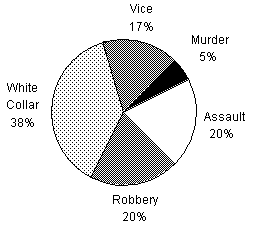

Ques Refer the graph below to answer the question.
DISTRIBUTION OF CRIMINAL ACTIVITY BY CATEGORY OF CRIME FOR COUNTRY X IN 1990 AND PROJECTED FOR 2000.
Criminal Population: 10 million (in yr. 1990)

Criminal Population: 20 million (in year 2000 (Projected))

What is the approximate projected percent increase between 1990 and 2000 in the number of criminals involved in vice?